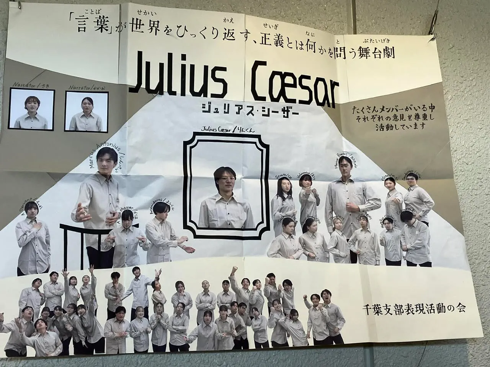

千葉支部表現活動の会
『Julius Cæsar part2 ジュリアス・シーザー』（GT15）

あらすじ
「お前もか！、ブルータス」
市民の熱狂的な支持を集め、終身独裁官として権力を握ったジュリアス・シーザー。
シーザー暗殺の中心に引き込まれたのは、「ローマで最も高潔な男」と謳われるブルータス。彼は個人的な友情よりも、愛するローマの自由と共和制を守ることを選び、最愛の友を刺す苦渋の決断を下す…
シェイクスピアが描いた、友情、愛国心、野心が激しく衝突する、ローマの運命を決する一日の物語。
コメント
こんにちは！千葉支部です！
ジュリアス・シーザー
――それは単なる歴史劇ではありません。
友情、愛国心、野心が激しく衝突し、人間の魂の深淵を覗き込むような大悲劇です。
静かな決意を秘めたブルータスの葛藤、
圧倒的なカリスマを放つシーザーの威厳、
そして言葉ひとつで大衆の心を揺さぶるアントニーの情熱。
シェイクスピアの傑出した“言葉の力”は、現代に生きる私たちの心にも強く響きます。
歴史が生む悲劇の重みと、人間の心理が織りなす苦悩を、全身で体感してください！！
当日写真
支部's模造紙

対談企画 後日回答
A1.お話の長さが長いか短いかで、作品に対する気持ちはあまり変わりません。今回は70分と長いお話でしたが、長さよりも「どのお話を伝えたいか」「何を表現したいか」を大事にして選びました
A2.衣装については、例年、衣装係が話し合って決めてくれています。今年は、古代ローマ人が着ていた「トーガ」という服を参考にして衣装を選びました。
A3.市民の意見が大きく変わるところについては、僕もこの作品の一番怖いところだと思っています。市民たちは、自分の意見を持っているようでいて、実はその場の言葉や空気に大きく動かされているように感じました。ブルータスの言葉で納得した直後に、アントニーの演説で一気に感情が反転していくところに、人間の弱さや群衆の怖さが出ていると思います。
だからこそ、今回の表現では市民をただの背景ではなく、「言葉に揺れ動く存在」として大事にしました。
A4.おっしゃる通り、千葉支部の表活としてはかなり挑戦的な選び方だったと思います。このライブラリーを選んだ理由は、まず「言葉で人が動く」というテーマに惹かれたからです。ブルータスやアントニーの演説を通して、市民の気持ちが大きく変わっていくところに、この作品の面白さがあると感じました。
話すキャラクターは限られていますが、その分、大人数でどう市民を作るか、言葉を聞いた人たちがどう変化するかを表現したいと思い、このライブラリーに決めました。
A5.シーザーを暗殺した覚悟、ローマを背負っていく意志、そして今後の絶望を暗示したものです。
A6.今回発表した『ジュリアス・シーザー』Part 2にはタイトルコールはありませんが、例年は物語の世界観に合ったタイトルの言い方を心がけています。